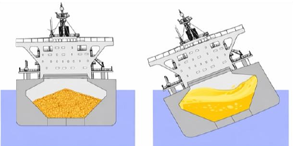
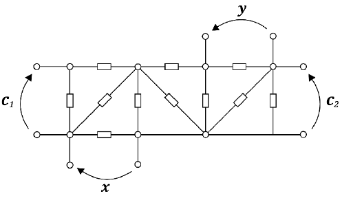
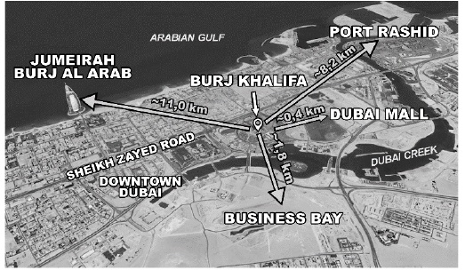
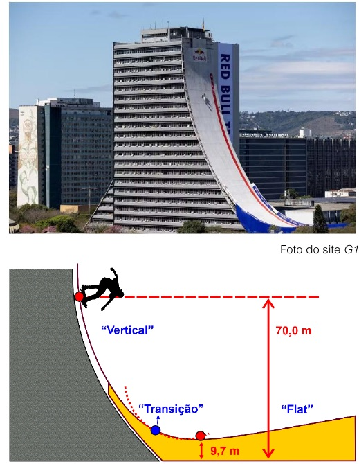

As 10 questões de Física da prova aplicada em 01/11/2026, com enunciado completo e resolução comentada. Tente responder antes: clique numa alternativa e a resolução abre logo abaixo.
Suas respostas
0 de 10 respondidas
Mostrar o gabarito
Questão 22
Hidrostática / estados físicos · interdisciplinar com Linguagens
Uma matéria publicada no começo de 2026 em um site de notícias apresentou o seguinte título:
“Histórias do Mar: Carga mortal — fenômeno que transforma minério em líquido afunda navio.”
Segundo a matéria, certos minérios com teor de umidade elevado, quando transportados a granel, podem sofrer um processo de fluidificação devido à vibração do navio. A água presente nos espaços entre os grãos, decorrente da própria umidade do minério, reduz o atrito entre eles, fazendo com que o conjunto passe a se comportar como um fluido, se movendo dentro do porão. Esse deslocamento da carga compromete a estabilidade da embarcação e pode levar ao seu naufrágio. A figura a seguir ilustra a situação.
Após o carregamento do minérioDurante o transporte

Considerando o fenômeno apresentado, é correto afirmar que o título da reportagem emprega linguagem
Ver resolução
O texto explica o mecanismo: a água entre os grãos reduz o atrito entre eles e, com a vibração, o conjunto granular passa a escoar como um fluido. Não há fusão (não há aquecimento significativo), nem dissolução (o minério não forma solução homogênea), nem vaporização.
Fisicamente, os grãos continuam sólidos; muda apenas o comportamento mecânico do conjunto (perda de resistência ao cisalhamento, fenômeno conhecido como liquefação de carga). Logo, “transforma minério em líquido” é linguagem figurada.
(A), (B), (C) e (D) falham por atribuírem ao minério uma mudança de estado ou de natureza química que não ocorre.
Resposta: alternativa E
Questão 35
Eletricidade · circuitos lineares (superposição)
Em um laboratório, um pesquisador realiza experimentos sobre um circuito elétrico composto por fios e resistores ideais não necessariamente iguais, conforme a imagem a seguir:

Quando se colocam fontes de tensão tal que (c₁, c₂) = (5, 10) volts, verifica-se que (x, y) = (5, 3) volts. Repete-se o experimento com (c₁, c₂) = (3, 3) volts, para medir (x, y) = (1, 2) volts. Quando se coloca (c₁, c₂) = (2, 1) volts, quanto deve valer 5(x + y), em volts?
Ver resolução
Um circuito formado apenas por fios e resistores ideais é linear: vale o princípio da superposição. Assim, as tensões medidas (x, y) são combinações lineares das fontes (c₁, c₂). Não é preciso conhecer os resistores.
Escrevemos a nova entrada como combinação das duas já conhecidas:
(2, 1) = a·(5, 10) + b·(3, 3)5a + 3b = 2 e 10a + 3b = 1Subtraindo: 5a = −1 ⇒ a = −1/5. Então 3b = 2 + 1 = 3 ⇒ b = 1(x, y) = −1/5·(5, 3) + 1·(1, 2) = (−1; −0,6) + (1; 2) = (0; 1,4) Vx + y = 1,4 V ⇒ 5(x + y) = 7 V
Resposta: alternativa A
Questão 36
Energia · eletricidade e meio ambiente
Texto para as questões 36 e 37. No contexto de 2026, a substituição de frotas a combustão por frotas elétricas é uma estratégia central de descarbonização para alguns países. O Uruguai, por exemplo, lidera a expansão de veículos elétricos na América Latina. Desde 2010, converteu 99% de sua matriz elétrica para fontes renováveis e locais. Essa transição estratégica permitiu ao país reduzir a dependência de combustíveis fósseis importados e foi impulsionada por incentivos fiscais agressivos. Em termos físicos, um carro elétrico pode ser modelado como um sistema simples de corrente contínua, no qual a bateria fornece a tensão, o “acelerador” atua como um resistor variável que controla a corrente, e o motor converte essa energia em movimento. A eficiência desse sistema depende da conversão da energia da bateria em movimento pelo motor, com a menor perda possível por calor (efeito Joule).
Do ponto de vista da Física e da conservação ambiental, a afirmação de que um carro elétrico produz “poluição zero” deve ser analisada com cautela. Considerando os princípios de conservação de energia e os impactos ambientais associados, é correto afirmar:
Ver resolução
Pela conservação da energia, a energia que move o carro vem da rede elétrica; o impacto ambiental depende de como essa energia foi gerada. Com matriz renovável (caso do Uruguai) as emissões são baixas; com termelétricas a carvão, as emissões apenas são transferidas para a usina. Isso é a alternativa (B).
(A) Falso: há troca de energia com o ambiente (recarga, dissipação térmica) e o carro não opera “por indução” em circuito isolado.
(C) Falso: o calor do efeito Joule é desprezível frente ao efeito estufa causado pela queima de combustíveis.
(D) Falso: baterias contêm metais pesados e reagentes que não se “convertem em energia”; exigem descarte e reciclagem adequados.
(E) Falso: para a mesma potência P = V·i, dobrar V reduz i à metade, e a perda Joule (Pd = R·i²) cai a um quarto. Há relação direta com a eficiência.
Um motorista está decidindo entre comprar um carro a gasolina ou um elétrico. No modelo elétrico, a ficha de especificação informa que, para manter uma velocidade constante de 100 km/h, o sistema opera com uma diferença de potencial de 400 V e uma corrente de 80 A.
Dados adicionais:
preço do carro a gasolina: R$ 120.000,00;
preço do carro elétrico: R$ 160.000,00;
uso mensal: 2.000 km por mês, à velocidade média de 100 km/h;
custo da gasolina: R$ 0,50 por km rodado;
tarifa de energia elétrica: R$ 0,80 por kWh.
Na comparação entre os dois modelos, considerando os dados apresentados e um tempo de posse do carro de 5 anos, é correto afirmar que, em termos financeiros,
Note e adote: P = ΔE/Δt = V·i. Desprezar variações no preço da gasolina e da energia no período.
Ver resolução
Potência: P = V·i = 400 × 80 = 32.000 W = 32 kWTempo de uso por mês: Δt = 2.000 km ÷ 100 km/h = 20 hEnergia por mês: E = 32 kW × 20 h = 640 kWh ⇒ custo = 640 × 0,80 = R$ 512,00/mêsGasolina por mês: 2.000 × 0,50 = R$ 1.000,00/mêsEconomia em 5 anos (60 meses): (1.000 − 512) × 60 = R$ 29.280,00Diferença de preço de compra: 160.000 − 120.000 = R$ 40.000,00
Sem incentivo, o elétrico sai R$ 40.000 − 29.280 = R$ 10.720,00 mais caro. Ele só passa a ser vantajoso com bônus superior a R$ 10.720; entre as opções, apenas “pelo menos R$ 11.000,00” garante isso (R$ 8.000 ou R$ 5.000 não bastam).
Resposta: alternativa A
Questão 42
Física moderna · equivalência massa-energia (E = mc²)
Em 2026, o cenário nuclear global é definido pela estagnação dos tratados de desarmamento e por uma nítida tendência de modernização dos arsenais. Compreender os riscos desse panorama exige uma análise técnica das “zonas de impacto”, que são áreas geográficas delimitadas onde os efeitos de uma detonação manifestam-se de forma previsível.
No contexto de uma explosão nuclear, essas zonas são classificadas conforme a intensidade dos danos físicos resultantes da energia liberada. O raio de uma zona de impacto específica é proporcional à raiz cúbica da energia do artefato, conforme a relação R ∝ ∛E. A tabela a seguir mostra as zonas de impacto para uma energia de referência de 9 × 10¹⁴ J.
Zona de impacto
Raio (aproximado)
O que acontece?
Bola de fogo
0,5 km
Tudo dentro desse raio é instantaneamente vaporizado pela temperatura extremamente alta.
Destruição total
2 km
Prédios de concreto são demolidos pela onda de choque de alta pressão.
Danos por calor
5 km
Roupas pegam fogo e pessoas sofrem queimaduras de 3º grau na pele exposta.
Danos leves
10 km
Vidros quebram, causando ferimentos por estilhaços.
Uma bomba atômica teórica contém 4 kg de urânio-235. Sabe-se que apenas 2% dessa massa é convertida efetivamente em energia de explosão por meio da fissão nuclear. Suponha que uma bomba desse tipo seja detonada no Burj Khalifa, o maior prédio do mundo, localizado no centro de Dubai. As distâncias de alguns pontos turísticos em relação ao Burj Khalifa (“ponto zero”) são: Dubai Mall: ~0,4 km; Business Bay: ~1,8 km; Port Rashid: ~8,2 km; Jumeirah Burj Al Arab: ~11,0 km.

Note e adote: c = 3 × 10⁸ m/s; E = mc².
Com base nas informações apresentadas, é correto afirmar:
Ver resolução
Massa convertida: m = 2% × 4 kg = 0,08 kgEnergia: E = mc² = 0,08 × (3 × 10⁸)² = 0,08 × 9 × 10¹⁶ = 7,2 × 10¹⁵ JE / Eref = 7,2 × 10¹⁵ / 9 × 10¹⁴ = 8 ⇒ R / Rref = ∛8 = 2
Todos os raios dobram: bola de fogo 1 km · destruição total 4 km · danos por calor 10 km · danos leves 20 km.
(A) Falso: 11 km está na zona de danos leves.
(B) Falso: o raio seria 4 km, não 2 km.
(C) Verdadeiro: 0,4 km < 1 km ⇒ dentro da bola de fogo.
(D) Falso: 8,2 km < 10 km ⇒ sofreriam queimaduras.
(E) Falso: o Burj Al Arab (11 km) teria danos leves.
Resposta: alternativa C
Questão 54
Cosmologia · natureza do conhecimento científico
Existe um conflito fundamental na cosmologia contemporânea sobre a taxa de expansão do universo, conhecido como a “Tensão de Hubble”. Ao ler um artigo de divulgação científica sobre o tema, um estudante descobriu que dois métodos científicos robustos e confiáveis apresentam resultados discrepantes para o valor dessa taxa, conhecida como Constante de Hubble (H₀):
Método A (abordagem teórica fundamental): baseia-se em deduções matemáticas estritas a partir das leis fundamentais da física aplicadas ao modelo cosmológico padrão. Utilizando como ponto de partida a Radiação Cósmica de Fundo em Micro-ondas (o eco do universo primitivo), esse método calcula, teoricamente, que H₀ ≈ 67,4 ± 0,5 km/s/Mpc.
Método B (abordagem observacional empírica): baseia-se puramente em dados observacionais diretos do universo local e tardio. Medindo a distância e o afastamento real de objetos cósmicos, como estrelas variáveis Cefeidas e supernovas do tipo Ia, esse método fornece, empiricamente, H₀ ≈ 73,0 ± 1,7 km/s/Mpc.
O artigo conclui que essa discrepância não configura um simples erro de calibração ou cálculo, mas sim uma “crise na cosmologia” que pode exigir o desenvolvimento de uma “Nova Física” para reconciliar os modelos teóricos fundamentais com as observações práticas.
Com base na interpretação dessas informações e nos princípios da divulgação científica confiável, assinale a alternativa que apresenta a análise mais coerente sobre a consistência dos argumentos e a natureza dos dados apresentados.
Ver resolução
A diferença não é “pequena” quando comparada às incertezas:
A discrepância vale cerca de 3 vezes a incerteza. Por isso não se pode simplesmente tirar a média (A é falsa).
Teoria e observação são igualmente necessárias: um modelo teórico só é válido se concorda com as medidas, e medidas confiáveis não podem ser descartadas (B, D e E são falsas). Quando dois métodos robustos discordam de forma sistemática, isso pode indicar que o modelo teórico está incompleto. É assim que a ciência avança.
Resposta: alternativa C
Questão 56
Óptica / astrofísica · nebulosas
Em 1872, Narcisa Amália publica o livro intitulado Nebulosas, no qual a ideia de nebulosas é associada a algo difuso e distante. Do ponto de vista da Astrofísica, nebulosas são grandes nuvens de gás e poeira no espaço interestelar que, em certas condições, podem colapsar gravitacionalmente e formar estrelas. Uma nebulosa interestelar pode ser observada da Terra principalmente porque
Ver resolução
Uma nebulosa não tem fonte própria de energia: não há fusão nuclear (A), pois ela é uma nuvem difusa, sem a densidade e a temperatura de um núcleo estelar. O brilho vem da radiação das estrelas vizinhas, que é refletida e espalhada pela poeira (nebulosas de reflexão) ou que ioniza o gás, que depois reemite luz.
(C) Falso: não há “atrito” gerando luz.
(D) Falso: nebulosas emitem e espalham em várias faixas, inclusive no visível.
(E) Falso: nebulosas escuras existem, mas não são o caso geral, e não absorvem “completamente”.
Resposta: alternativa B
Questão 73
Mecânica · energia e trabalho de forças dissipativas
Texto para as questões 73 e 74. Em outubro de 2025, o skatista Sandro Dias (o “Mineirinho”) realizou o que foi considerado o maior drop de skate do mundo, descendo em uma rampa montada na lateral do Centro Administrativo Fernando Ferrari, em Porto Alegre (vide foto). Partindo do repouso de uma plataforma montada a 70 m do solo, o skatista desceu pela rampa, passando por uma parte curva (“transição”) até chegar ao ponto mais baixo da rampa, a uma altura de 9,70 m do solo. O percurso termina em um leve aclive (“flat”), conforme ilustrado na segunda figura. Considere que Sandro pesa 70 kg e que o trabalho das forças de atrito e arrasto do ar foi de 10.710 J durante a primeira parte do percurso (até o ponto mais baixo da rampa).

Note e adote: g = 10 m/s².
Considerando os efeitos das forças dissipativas mencionadas, qual a velocidade, em km/h, que Sandro alcançou no ponto mais baixo da rampa?
Ver resolução
Teorema da energia, com perdas: Ep,inicial = Ec,final + Ep,final + |Wdissipativas|.
Desnível: Δh = 70 − 9,7 = 60,3 m ⇒ m·g·Δh = 70 × 10 × 60,3 = 42.210 JEnergia cinética no ponto mais baixo: Ec = 42.210 − 10.710 = 31.500 J½ · 70 · v² = 31.500 ⇒ v² = 900 ⇒ v = 30 m/s30 m/s × 3,6 = 108 km/h
Resposta: alternativa D
Questão 74
Dinâmica do movimento circular · força normal na transição
Quando Sandro está na zona de “transição”, marcada por um ponto azul na figura, antes do ponto mais baixo da rampa, é correto afirmar:
Ver resolução
Na transição a trajetória é curva e côncava, com o centro de curvatura acima do skatista. Para que ele descreva essa curva, a resultante na direção radial (apontando para o centro) deve ser a força centrípeta:
N − P·cos θ = m·v²/R ⇒ N = P·cos θ + m·v²/R > P·cos θ
Aqui P·cos θ é a componente radial do peso. Como v é alta (≈ 30 m/s), a normal é bem maior que essa componente: sensação de “peso aumentado” e sobrecarga nos joelhos.
(A) e (C) Falsos: há contato com a rampa, logo N ≠ 0 e não é queda livre.
(D) Falso: não há equilíbrio, pois existe aceleração centrípeta (e tangencial).
(E) Falso: a trajetória é curva, não retilínea.
Resposta: alternativa B
Questão 75
Calorimetria · equilíbrio térmico com mudança de fase
Para vender água no Carnaval, uma pessoa colocou em uma caixa de isopor 15 copinhos de água com 350 mL cada, à temperatura de 25 °C, e 1,0 kg de gelo em blocos. Para preencher todo o volume do isopor, acrescentou 0,5 kg de gelo triturado na caixa, que foi fechada e lacrada. Sabendo que o gelo, em blocos e triturado, estava à temperatura negativa de −15 °C, qual a temperatura do conteúdo dos copinhos após toda a mistura no interior do isopor atingir o equilíbrio térmico e qual o estado físico da água na caixa?
Note e adote: isopor é isolante ideal; embalagem dos copinhos é condutora ideal; variações de volume e pressão desprezíveis. Q = m·L (mudança de fase) e Q = m·c·ΔT. Densidade da água = 1 kg/L; cágua = 1 cal/g·°C; cgelo = 0,5 cal/g·°C; Lvaporização = 540 cal/g; Lfusão = 80 cal/g.
Ver resolução
Água dos copinhos: 15 × 350 mL = 5.250 mL ⇒ 5.250 gCalor que ela pode ceder até 0 °C: 5.250 × 1 × 25 = 131.250 calGelo: 1,0 + 0,5 = 1,5 kg = 1.500 gAquecer de −15 °C a 0 °C: Q₁ = 1.500 × 0,5 × 15 = 11.250 calFundir todo o gelo: Q₂ = 1.500 × 80 = 120.000 calTotal para levar todo o gelo a água a 0 °C: Q₁ + Q₂ = 131.250 cal
O calor cedido pela água é exatamente igual ao necessário para aquecer e derreter todo o gelo. Portanto, o equilíbrio ocorre a 0 °C, com todo o gelo derretido e apenas água líquida (6,75 kg) na caixa.